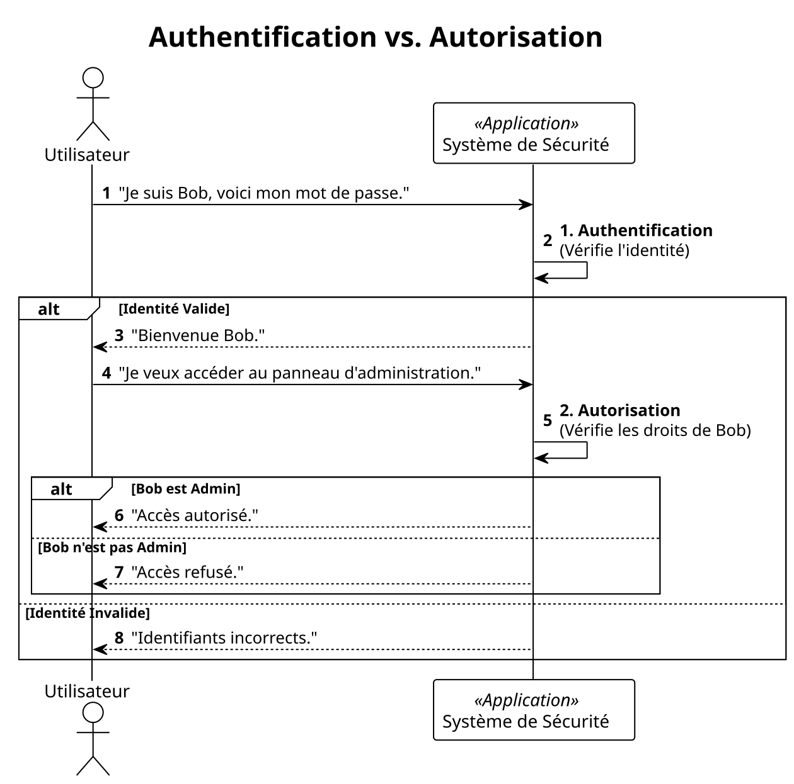

Module 7 : Sécuriser vos Applications Web - L'essentiel
Absolument. C'est une excellente idée de dédier un module entier à la sécurité, car c'est un sujet trop important pour être survolé. Voici le nouveau Module 7, qui s'insère avant le déploiement.
Objectifs Pédagogiques
À la fin de ce module, vous serez capable de :
Différencier les concepts fondamentaux d'Authentification (AuthN) et d'Autorisation (AuthZ).
Intégrer ASP.NET Core Identity pour ajouter un système complet de gestion des utilisateurs à une application MVC.
Sécuriser des contrôleurs et des actions en utilisant des attributs comme
[Authorize].Comprendre et prévenir les deux attaques web les plus courantes : Cross-Site Scripting (XSS) et Cross-Site Request Forgery (CSRF).
Expliquer le rôle crucial du protocole HTTPS.
Introduction : La sécurité de votre maison
Vous avez bâti une magnifique maison (votre application). Elle est fonctionnelle, bien agencée et prête à accueillir des visiteurs. Mais avez-vous pensé à installer des serrures, une alarme, et à vérifier l'identité de ceux qui entrent ? Une maison sans sécurité est une invitation aux problèmes.
La sécurité web n'est pas une option, c'est une fondation. Dans ce module, nous allons apprendre à être le "chef de la sécurité" de notre application. Nous allons installer un système de contrôle d'accès sophistiqué, apprendre à déjouer les techniques des cambrioleurs du web et nous assurer que les conversations entre nos visiteurs et notre maison sont totalement privées. Ignorer ces principes, c'est comme laisser la porte d'entrée grande ouverte avec un mot "Bienvenue" sur le paillasson.
1. Authentification vs. Autorisation : Les deux piliers de la sécurité
Avant toute chose, il faut maîtriser deux concepts qui sont souvent confondus.
Pensez à l'entrée d'un immeuble de bureaux sécurisé :
Authentification (AuthN) : C'est le processus de vérification de votre identité. Vous présentez votre badge d'employé au lecteur. Le système vérifie que ce badge est valide et qu'il correspond à une personne enregistrée. La question est : "Qui êtes-vous ?".
Autorisation (AuthZ) : Une fois que le système sait qui vous êtes, il vérifie vos droits. Votre badge ouvre la porte d'entrée, mais peut-être pas la porte du bureau du PDG ou celle de la salle des serveurs. La question est : " Qu'avez-vous le droit de faire ?".
On ne peut pas autoriser quelqu'un si on ne l'a pas d'abord authentifié.

2. ASP.NET Core Identity : Votre service de sécurité intégré
Le problème : Mettre en place un système de gestion d'utilisateurs est complexe. Il faut gérer l'inscription, la connexion, le hachage sécurisé des mots de passe, la confirmation par email, la réinitialisation de mot de passe... Le faire soi-même est une recette pour les failles de sécurité.
La solution : ASP.NET Core Identity. C'est une solution "clés en main" fournie par Microsoft. C'est un service de sécurité complet et éprouvé qui gère tout cela pour vous. Il s'intègre parfaitement avec Entity Framework Core pour stocker les utilisateurs et leurs informations dans votre base de données.
Le modèle d'authentification par défaut pour Identity dans une application MVC est basé sur les cookies.
L'utilisateur se connecte avec succès.
Le serveur crée un cookie d'authentification chiffré et le renvoie au navigateur.
Le navigateur inclura automatiquement ce cookie dans toutes les requêtes suivantes vers le même site.
Le middleware d'authentification d'ASP.NET Core intercepte le cookie, le déchiffre, et reconstitue l'identité de l' utilisateur pour cette requête.
Utilisation
Une fois Identity en place (comme nous le verrons dans le TP), sécuriser un contrôleur ou une action devient un jeu d'enfant avec l'attribut [Authorize].
3. Prévenir les Attaques Web Courantes
Cross-Site Scripting (XSS)
Le problème : Un utilisateur malveillant réussit à injecter du code JavaScript dans votre site, par exemple via un champ de commentaire. Quand d'autres utilisateurs afficheront ce commentaire, leur navigateur exécutera le script malveillant, qui pourrait voler leurs cookies ou leurs informations.
L'analogie : C'est comme si quelqu'un laissait une note piégée sur un tableau d'affichage public. Toute personne qui la lit déclenche le piège.
La solution (simple !) : Par défaut, le moteur de vue Razor encode automatiquement toutes les données que vous affichez. Si une variable contient
<script>alert('hacké')</script>, Razor la transformera en texte inoffensif<script>alert('hacké')</script>dans le HTML.Comment être vulnérable : En désactivant manuellement cette protection avec
@Html.Raw().@{ string maliciousComment = "<script>steal_cookie()</script>"; } <!-- SÉCURISÉ : Razor encode le script --> <p>@maliciousComment</p> <!-- VULNÉRABLE : Vous injectez le script directement dans la page --> <p>@Html.Raw(maliciousComment)</p>
Cross-Site Request Forgery (CSRF ou XSRF)
Le problème : Vous êtes connecté au site de votre banque. Un pirate vous envoie un email avec un lien vers une image de chat. Vous cliquez. La page que vous ouvrez contient un formulaire invisible qui effectue une opération de virement sur le site de votre banque. Votre navigateur, serviable, envoie le cookie de session de votre banque avec la requête. La banque voit une requête valide venant de vous et effectue le virement.
L'analogie : Un faussaire envoie un ordre de paiement à votre banque. Il ne connaît pas votre signature, mais il a réussi à vous faire apposer votre signature (le cookie) sur le document à votre insu.
La solution : Les Anti-Forgery Tokens. ASP.NET Core le fait presque automatiquement.
Quand il affiche un formulaire (
<form>), le serveur y place un champ caché avec un jeton unique et aléatoire. Il place aussi ce jeton dans un cookie.Quand le formulaire est soumis, le serveur vérifie que le jeton du formulaire correspond bien à celui du cookie.
Un site pirate ne peut pas connaître le jeton qui a été généré dans le formulaire, donc sa requête sera rejetée.
Comment l'activer :
Les Tag Helpers (
<form asp-action="...">) ajoutent le champ caché pour vous.Vous devez décorer votre action
[HttpPost]avec l'attribut[ValidateAntiForgeryToken].
[HttpPost] [ValidateAntiForgeryToken] public IActionResult Create(ProductCreateModel model) { // Le framework vérifie le jeton avant même d'exécuter ce code. // ... }
4. HTTPS : La conversation privée
Le problème : Sans HTTPS, toutes les données échangées entre le navigateur de l'utilisateur et votre serveur (mots de passe, informations de carte de crédit, cookies) voyagent en clair sur Internet. N'importe qui sur le même réseau ( ex: un Wi-Fi public) peut les intercepter et les lire.
La solution : HTTPS (HyperText Transfer Protocol Secure). Il chiffre la communication.
L'analogie : HTTP, c'est envoyer une carte postale. Tout le monde peut la lire pendant son transport. HTTPS, c'est mettre cette même carte dans une enveloppe scellée et blindée.
Comment l'activer :
En développement, le template ASP.NET Core le configure pour vous.
En production, votre service d'hébergement (Azure, AWS...) ou votre reverse proxy (Nginx) se chargera d'installer un certificat SSL/TLS et de gérer la terminaison HTTPS.
Le middleware
app.UseHttpsRedirection();dansProgram.csredirige automatiquement tout le trafic HTTP vers HTTPS.
Absolument. Voici un TP complet axé sur la sécurité, qui utilise une nouvelle étude de cas : un mini-forum de discussion.
Ce TP est conçu pour mettre en pratique les notions essentielles de sécurité dans une application MVC : l'intégration d'Identity, la gestion des rôles, et la protection des données en fonction de l'utilisateur qui les a créées.
TP : Sécurisation d'un Forum de Discussion
Contexte du Projet
Nous allons construire et sécuriser une application de forum très simple. Les utilisateurs pourront s'inscrire, se connecter, créer de nouveaux sujets de discussion et poster des réponses.
Les règles de sécurité seront les suivantes :
Tout le monde (même les visiteurs anonymes) peut voir la liste des sujets et lire les messages.
Seuls les utilisateurs connectés peuvent créer un nouveau sujet ou répondre à un sujet existant.
Seuls les créateurs d'un message (le sujet initial ou une réponse) peuvent le modifier.
Seuls les utilisateurs ayant le rôle "Moderator" peuvent supprimer n'importe quel message.
Objectifs du TP
Mettre en place ASP.NET Core Identity de A à Z.
Gérer les relations entre les données et les utilisateurs (
IdentityUser).Appliquer l'autorisation basée sur l'identité (vérifier que l'utilisateur est le créateur).
Mettre en place et utiliser l'autorisation basée sur les rôles ("Moderator").
Structure Initiale (à mettre en place)
Pour gagner du temps, nous allons partir du principe que le projet MVC de base est créé et qu'EF Core avec SQLite est configuré.
Entités de départ :
Énoncé du TP
Intégrez Identity à l'application. Cela inclut l'installation des paquets, la mise à jour du
DbContextpour qu'il hérite deIdentityDbContext, la configuration des services et middlewares dansProgram.cs, la création des migrations pour Identity, et la génération de l'interface utilisateur pour la connexion et l'inscription.Modifiez les entités
TopicetPostpour qu'elles soient liées à un utilisateur. Chaque sujet et chaque message doit avoir un auteur. Mettez à jour la base de données avec une nouvelle migration.Modifiez la logique de création des sujets et des messages. Seuls les utilisateurs connectés doivent pouvoir créer du contenu. L'auteur (l'ID de l'utilisateur connecté) doit être automatiquement enregistré lors de la création.
Exigences :
Les boutons "Nouveau Sujet" et "Répondre" ne doivent être visibles que pour les utilisateurs connectés.
Les actions
[HttpPost]correspondantes doivent être protégées par l'attribut[Authorize].
Implémentez la fonctionnalité de modification d'un message (
Post). Seul l'auteur original du message doit pouvoir y accéder.Exigences :
Un bouton "Modifier" n'apparaît à côté d'un message que si l'utilisateur connecté est son auteur.
L'action
Edit(int id)[GET] doit vérifier que l'utilisateur connecté est bien l'auteur avant d'afficher le formulaire. Si ce n'est pas le cas, elle doit retournerForbid()(HTTP 403).L'action
Edit[POST] doit effectuer la même vérification avant de sauvegarder les modifications.
Mettez en place un système de rôles pour la modération. Seuls les utilisateurs avec le rôle "Moderator" pourront supprimer des messages.
Exigences :
Créez un rôle "Moderator" dans le système. Vous pouvez le faire via un "seeder" de données qui s'exécute au démarrage de l'application.
Assignez manuellement ce rôle à un utilisateur de test (via le seeder ou directement dans la base de données).
Un bouton "Supprimer" apparaît à côté de chaque message uniquement si l'utilisateur connecté a le rôle "Moderator".
L'action
Delete[POST] doit être protégée par l'attribut[Authorize(Roles = "Moderator")].
Correction Détaillée du TP
Étape 1 : Intégration d'Identity
Installer
Microsoft.AspNetCore.Identity.EntityFrameworkCoreetMicrosoft.AspNetCore.Identity.UI.Modifier
ApplicationDbContextpour qu'il hérite deIdentityDbContext.Configurer les services (
AddDefaultIdentity) et les middlewares (UseAuthentication,UseAuthorization) dansProgram.cs.Exécuter
dotnet ef migrations add AddIdentitySchemaetdotnet ef database update.Générer l'UI avec
dotnet aspnet-codegenerator identity....Ajouter la vue partielle
_LoginPartial.cshtmlet l'inclure dans_Layout.cshtml.
Étape 2 : Association des Données aux Utilisateurs
Migration :
Étape 3 : Sécurisation de la Création
*La logique pour la création de `Post` est très similaire.*
Étape 4 : Autorisation basée sur l'Identité (Modification)
Étape 5 : Autorisation basée sur les Rôles (Suppression)
Comment tester :
Lancez l'application. Les rôles "Moderator" et "Member" sont créés.
Inscrivez-vous avec un nouvel utilisateur.
Ouvrez la base de données (
kanbanflow.dbavec un outil comme DB Browser for SQLite).Allez dans la table
AspNetRoleset trouvez l'ID du rôle "Moderator".Allez dans la table
AspNetUserset trouvez l'ID de votre utilisateur.Allez dans la table de jonction
AspNetUserRoleset ajoutez une nouvelle ligne avec l'ID de votre utilisateur et l'ID du rôle "Moderator".Reconnectez-vous. Vous devriez maintenant voir les boutons de suppression.
Ce TP couvre un scénario de sécurité très réaliste et vous donne une base solide pour protéger vos applications MVC.
Auto-évaluation
Un système qui vérifie votre mot de passe effectue une opération de : a) Autorisation b) Authentification c) Validation d) Encryption
Quel attribut faut-il ajouter à une action
[HttpPost]pour la protéger contre les attaques CSRF ? a)[Authorize]b)[ValidateAntiForgeryToken]c)[HttpPost]d)[AllowAnonymous]La protection par défaut de Razor contre les attaques XSS consiste à : a) Supprimer toutes les balises
<script>. b) Encoder en HTML les données affichées. c) Chiffrer les données. d) Mettre les scripts en quarantaine.Quel est le rôle du middleware
UseHttpsRedirection()? a) Chiffrer le site. b) Forcer les navigateurs à utiliser HTTPS au lieu de HTTP. c) Gérer les certificats SSL. d) Bloquer les requêtes HTTP.Avec vos propres mots, expliquez pourquoi un utilisateur authentifié pourrait ne pas être autorisé à effectuer une action. Donnez un exemple.
Décrivez le fonctionnement de l'authentification par cookie dans une application MVC.
Pourquoi ne faut-il jamais utiliser
@Html.Raw()sur une donnée qui pourrait avoir été saisie par un utilisateur ?
Conclusion
Vous avez maintenant les clés pour construire des applications qui non seulement fonctionnent, mais qui protègent aussi leurs utilisateurs et leurs données. Vous comprenez la danse cruciale entre l' authentification et l'**autorisation **, vous savez mettre en place un système robuste avec ASP.NET Core Identity, et vous connaissez les parades contre les menaces les plus communes du web, XSS et CSRF.
La sécurité n'est pas un ajout, c'est un état d'esprit. Pensez-y dès le début de vos projets. Validez toujours les données, ne faites jamais confiance à l'entrée utilisateur, et appliquez le principe du moindre privilège.
Dans la partie "Pour aller plus loin", nous verrons comment ces concepts s'appliquent au monde des APIs avec les tokens JWT, et nous explorerons des modèles d'autorisation plus complexes.